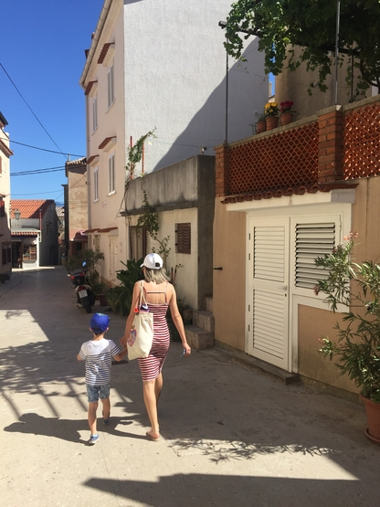
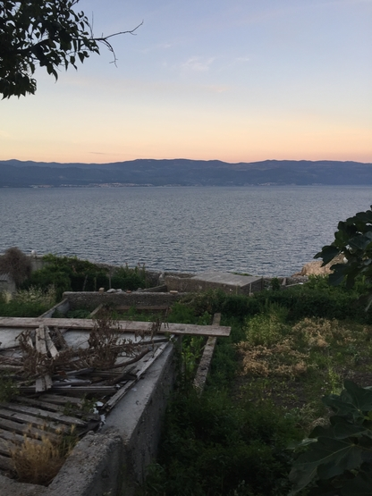
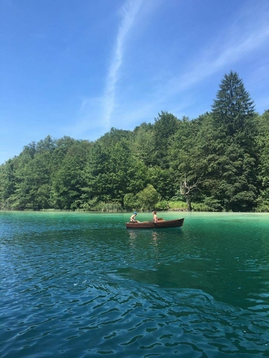
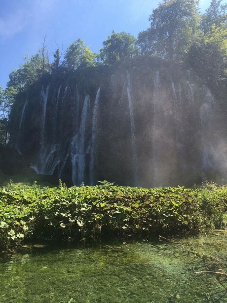
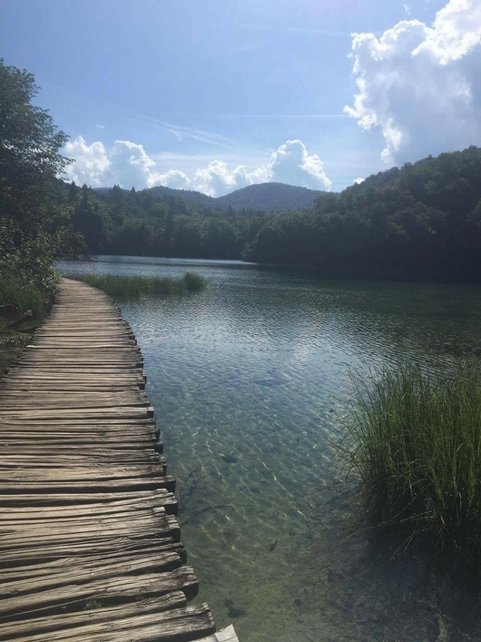

Mon voyage en Croatie.
Hello tout le monde!
Aujourd’hui je vais vous parler de mon voayge en Croatie.
Je suis partie en Juillet 2016 avec mon fils Andrea, qui était aussi excité que moi de partager cette aventure, le premier voyage entre mère etfils!
Nous sommmes partis de Toulouse un dimanche pour atterir le jour même à Pula au nord du pays. Nous avions envie de plage, mer, paysage de rêve pour bien commencer l’été donc quoi de mieux que de commencer la semaine par l’île de Krk.
Nous l’avons parcouru en long et en large pendant 4 jours pour ensuite retourner sur Pula. Entre temps nous avons fait un détours dans les terres croates jusqu’au lacs de Plitvices!!
Je vous partage quelque photo afin que vous puissiez vivre ce moment avec moi.




